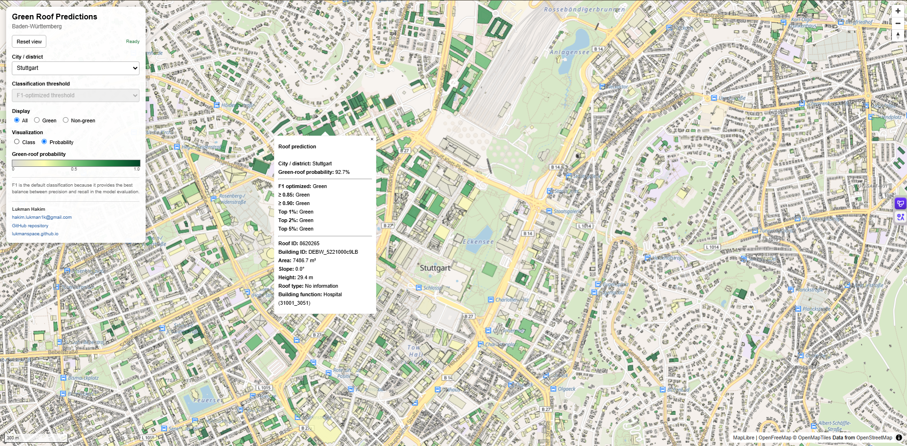

Green Roof Detection in Baden-Württemberg
Developed a state-scale Earth Observation and machine-learning workflow combining 14+ million LoD2 roof planes with multispectral PlanetScope imagery, Python, and Random Forest classification to produce a probability-based green-roof inventory for Baden-Württemberg.
Python · GeoPandas · PlanetScope · LoD2 · Remote Sensing · Random Forest · Large-Scale Geoprocessing